install.packages("dplyr")
install.packages("ggplot2")
install.packages("tidyr")
install.packages("flextable")
install.packages("here")
install.packages("checkdown")
install.packages("e1071") # skewness and kurtosis
install.packages("effectsize") # Cohen's d, f-squared, eta-squared
install.packages("report") # automated result summaries
install.packages("performance") # model diagnostics
install.packages("car") # VIF for multicollinearity
install.packages("broom") # tidy model output7 Statistics in R: Inferential Tests and Regression
8 Introduction
This chapter introduces the two most widely used families of statistical methods in quantitative humanities research: classical inferential tests (t-tests, chi-square tests, correlation) and regression models (linear and logistic). It builds directly on the data-handling skills from Chapter 5 and the visualisation skills from Chapter 6, and lays the foundation for the mixed-effects models covered in Chapter 8.
TipWhat This Chapter Covers
Part A — Statistical Reasoning
- The logic of inferential statistics: from sample to population
- p-values: what they are and what they are not
- Checking parametric assumptions (brief)
- t-tests: paired and independent
- Chi-square tests for categorical data
- Correlation (bridge to regression)
Part B — Regression Concepts
- What regression is and the OLS equation
- The geometry of regression — finding the best line
- Interpreting coefficients, standard errors, p-values
- R² and model fit
- Regression assumptions
- Categorical predictors (dummy coding)
Part C — Regression in R
- Simple linear regression with
lm() - Multiple linear regression and interactions
- Model diagnostics with
performance - Binary logistic regression with
glm() - Reporting regression results
Scope note: This chapter stays focused on classical inference and fixed-effects regression. Mixed-effects models — where observations are nested or repeated — are covered in Chapter 8. Non-parametric tests, multinomial/ordinal/Poisson regression, and robust regression are mentioned but not treated in depth.
Preparation and Session Set-up
Install the packages used in this chapter (only needed once):
Load them at the start of each session:
Load the datasets used throughout this chapter (copied from LADAL into the data/ folder):
# For t-tests and assumption checking
mdata <- base::readRDS(here::here("data", "mdata.rda"))
tdata_d03 <- base::readRDS(here::here("data", "d03.rda"))
# For chi-square examples (loaded inline where used)
# For regression
slrdata <- base::readRDS(here::here("data", "sld.rda")) # simple linear
mlrdata <- base::readRDS(here::here("data", "mld.rda")) # multiple linear
logdata <- base::readRDS(here::here("data", "bld.rda")) # binary logisticPart A — Statistical Reasoning
9 From Samples to Populations
NoteSection Overview
What you will learn: The conceptual foundation of inferential statistics — what a p-value actually means, how NHST works, and why effect sizes are essential alongside significance tests.
When we collect data in the humanities — a corpus, an experiment, a survey — we almost never observe the entire population of interest. Instead, we work with a sample: a subset of the population we hope is representative. Inferential statistics provide the tools to reason from the sample to the population under conditions of uncertainty.
The dominant framework for this reasoning is null hypothesis significance testing (NHST):
- We formulate a null hypothesis (H₀) — typically that there is no effect, no difference, or no association in the population.
- We formulate an alternative hypothesis (H₁) — the substantive claim we want to test.
- We calculate a test statistic that summarises how far our data deviate from what H₀ would predict.
- We compute a p-value: the probability of observing a test statistic as extreme as ours (or more extreme) if H₀ were true.
- If p falls below a pre-specified significance threshold (typically α = .05), we reject H₀ in favour of H₁.
ImportantCommon Misconceptions About p-values
The p-value is one of the most frequently misinterpreted statistics in all of science. It is not:
- The probability that H₀ is true
- The probability that the result is due to chance
- A measure of the size or importance of an effect
- A guarantee of reproducibility
A p-value below .05 tells us only that our data are unlikely under H₀. It says nothing about the magnitude of the effect (which requires an effect size) or whether the result will replicate (which requires power and replication).
Always report effect sizes alongside p-values.
NoteParametric vs. Non-Parametric Tests
Tests can be broadly divided into two families:
| Type | When to use | Examples |
|---|---|---|
| Parametric | Data (or residuals) are approximately normally distributed; numeric dependent variable | t-test, ANOVA, linear regression |
| Non-parametric | Data are ordinal, or residuals are non-normal; robust to assumption violations | Mann-Whitney U, Wilcoxon, Kruskal-Wallis, χ² |
This chapter focuses on parametric tests and chi-square. If your data violate normality assumptions and sample sizes are small, consult a non-parametric alternative; see the Further Resources section at the end.
10 Checking Assumptions
NoteSection Overview
What you will learn: How to check whether your data meet the assumptions required for parametric tests.
Key methods: Histograms, Q-Q plots, Shapiro-Wilk test, skewness, kurtosis
The most important assumptions for parametric tests are:
- Normality — the errors (residuals) within each group are approximately normally distributed
- Homogeneity of variances — the variances of the groups are approximately equal
We illustrate assumption checking with word count data from a sample corpus, extracting 100 utterances from men and 100 from women:
Visual Inspection
A histogram with density curve gives an immediate impression of distributional shape. A normal distribution should produce a symmetric, bell-shaped histogram.
ggplot(ndata, aes(x = Words, fill = Gender)) +
geom_histogram(bins = 20, color = "white", alpha = 0.7) +
facet_wrap(~ Gender) +
scale_fill_manual(values = c("steelblue", "tomato")) +
theme_bw() +
theme(legend.position = "none") +
labs(title = "Distribution of word counts by gender",
x = "Words per utterance", y = "Count")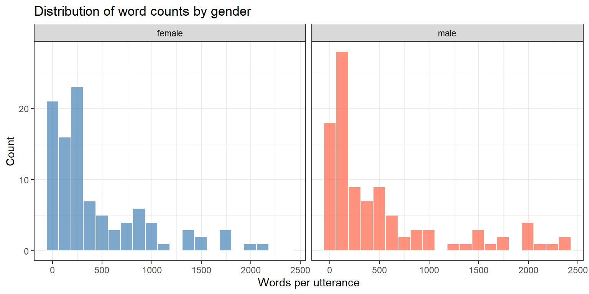
A Q-Q plot (quantile-quantile) is often more informative than a histogram. If the data are normal, the points fall on the diagonal.
ggplot(ndata, aes(sample = Words, color = Gender)) +
stat_qq() +
stat_qq_line() +
facet_wrap(~ Gender) +
scale_color_manual(values = c("steelblue", "tomato")) +
theme_bw() +
theme(legend.position = "none") +
labs(title = "Q-Q plots by gender",
x = "Theoretical quantiles", y = "Sample quantiles")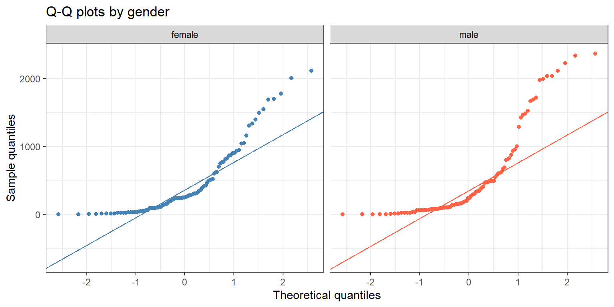
Skewness and Kurtosis
Skewness measures asymmetry: zero is perfectly symmetric; positive values indicate a long right tail; negative values indicate a long left tail.
Kurtosis measures the heaviness of tails relative to a normal distribution: zero is normal; positive is heavy-tailed (more outliers than normal); negative is light-tailed.
# A tibble: 2 × 6
Gender n mean_words sd_words skewness kurtosis
<chr> <int> <dbl> <dbl> <dbl> <dbl>
1 female 100 447. 499. 1.5 1.55
2 male 100 519. 640. 1.5 1.11
TipInterpreting Skewness Values
| skewness | |
|---|---|
| ≤ 0.5 | approximately symmetric |
| 0.5–1.0 | moderately skewed |
| > 1.0 | highly skewed |
Highly skewed data often benefit from a transformation (log, square root) before parametric testing — or from a non-parametric test.
Formal Test: Shapiro-Wilk
The Shapiro-Wilk test tests the null hypothesis that the data come from a normal distribution. A small p-value means we reject normality.
ndata |>
dplyr::group_by(Gender) |>
dplyr::summarise(
W_statistic = round(shapiro.test(Words)$statistic, 3),
p_value = round(shapiro.test(Words)$p.value, 4),
.groups = "drop"
)# A tibble: 2 × 3
Gender W_statistic p_value
<chr> <dbl> <dbl>
1 female 0.805 0
2 male 0.757 0
WarningShapiro-Wilk: Limitations
For large samples (n > 300), Shapiro-Wilk becomes oversensitive: it will flag tiny, inconsequential deviations from normality as “significant.” For large samples, trust the visual inspection (Q-Q plot) more than the test. For small samples (n < 20), the test has low power and may miss genuine non-normality — again, trust visual inspection.
11 Parametric Tests: t-tests
NoteSection Overview
What you will learn: When and how to apply t-tests in R, and how to extract and report effect sizes.
Key tests: Paired t-test, independent t-test (Student’s and Welch’s)
The t-test compares the means of two groups or conditions. There are two main variants:
| Type | Use when |
|---|---|
| Paired (dependent) t-test | The same participants are measured in two conditions |
| Independent t-test | Two separate groups of participants |
Paired t-test
A paired t-test accounts for the fact that scores in two conditions come from the same individuals. By working with the difference within each pair, it removes between-subject variability and is more powerful than the independent t-test for matched data.
\[t = \frac{\bar{D}}{s_D / \sqrt{N}}\]
where \(\bar{D}\) is the mean difference between paired observations, \(s_D\) is its standard deviation, and \(N\) is the number of pairs.
Example: Does an 8-week teaching intervention reduce spelling errors? Six students wrote essays before and after the intervention.
Pretest <- c(78, 65, 71, 68, 76, 59)
Posttest <- c(71, 62, 70, 60, 66, 48)
ptd <- data.frame(Student = 1:6, Pretest, Posttest)
ptd Student Pretest Posttest
1 1 78 71
2 2 65 62
3 3 71 70
4 4 68 60
5 5 76 66
6 6 59 48Visualise within-student differences:
ptd_long <- ptd |>
tidyr::pivot_longer(cols = c(Pretest, Posttest),
names_to = "Time", values_to = "Errors") |>
dplyr::mutate(Time = factor(Time, levels = c("Pretest", "Posttest")))
ggplot(ptd_long, aes(x = Time, y = Errors, group = Student)) +
geom_line(color = "gray60", linewidth = 0.7) +
geom_point(aes(color = Time), size = 3) +
scale_color_manual(values = c("steelblue", "tomato")) +
theme_bw() +
theme(legend.position = "none", panel.grid.minor = element_blank()) +
labs(title = "Spelling errors before and after teaching intervention",
x = "", y = "Number of spelling errors")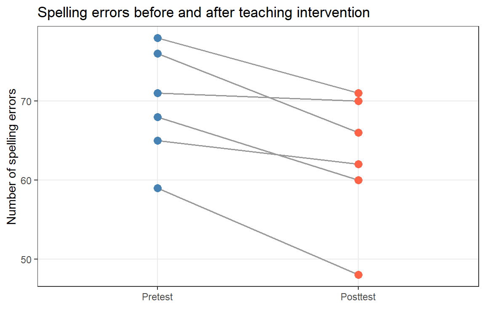
Each line is one student. The general downward trend suggests improvement. Test it formally:
t.test(ptd$Pretest, ptd$Posttest, paired = TRUE, conf.level = 0.95)
Paired t-test
data: ptd$Pretest and ptd$Posttest
t = 4.1523, df = 5, p-value = 0.00889
alternative hypothesis: true mean difference is not equal to 0
95 percent confidence interval:
2.539479 10.793854
sample estimates:
mean difference
6.666667 The test is significant (t₅ = 4.15, p = .009). Extract Cohen’s d as the effect size:
effectsize::cohens_d(x = ptd$Pretest, y = ptd$Posttest, paired = TRUE)Cohen's d | 95% CI
------------------------
1.70 | [0.37, 2.96]
TipCohen’s d Benchmarks
| d | |
|---|---|
| 0.01 | Very small |
| 0.20 | Small |
| 0.50 | Medium |
| 0.80 | Large |
| 1.20 | Very large |
| 2.00 | Huge |
Source: Cohen (1988); Sawilowsky (2009).
Automated reporting with the report package:
Effect sizes were labelled following Cohen's (1988) recommendations.
The Paired t-test testing the difference between ptd$Pretest and ptd$Posttest
(mean difference = 6.67) suggests that the effect is positive, statistically
significant, and large (difference = 6.67, 95% CI [2.54, 10.79], t(5) = 4.15, p
= 0.009; Cohen's d = 1.70, 95% CI [0.37, 2.96])
NoteReporting: Paired t-test
A paired t-test confirmed that the 8-week teaching intervention produced a significant reduction in spelling errors (t₅ = 4.15, p = .009). The effect was very large (Cohen’s d = 1.70, 95% CI [0.41, 3.25]), indicating a practically meaningful impact.
Independent t-test
An independent t-test compares the means of two separate, unrelated groups:
\[t = \frac{\bar{X}_1 - \bar{X}_2}{\sqrt{\frac{s^2_p}{N_1} + \frac{s^2_p}{N_2}}}\]
TipStudent’s vs. Welch’s t-test
By default, R’s t.test() uses Welch’s t-test, which adjusts the degrees of freedom to account for unequal variances. This is generally the safer choice. To use the classical Student’s formula (after verifying equal variances), set var.equal = TRUE.
Example: Do native speakers and learners of English differ in their proficiency test scores?
tdata <- tdata_d03 |>
dplyr::rename(NativeSpeakers = 1, Learners = 2) |>
tidyr::pivot_longer(cols = everything(),
names_to = "Group", values_to = "Score") |>
dplyr::mutate(Group = factor(Group))ggplot(tdata, aes(x = Group, y = Score, fill = Group)) +
geom_boxplot(alpha = 0.7, outlier.color = "red") +
scale_fill_manual(values = c("steelblue", "tomato")) +
theme_bw() +
theme(legend.position = "none", panel.grid.minor = element_blank()) +
labs(title = "Proficiency scores: Native speakers vs. Learners",
x = "", y = "Test score")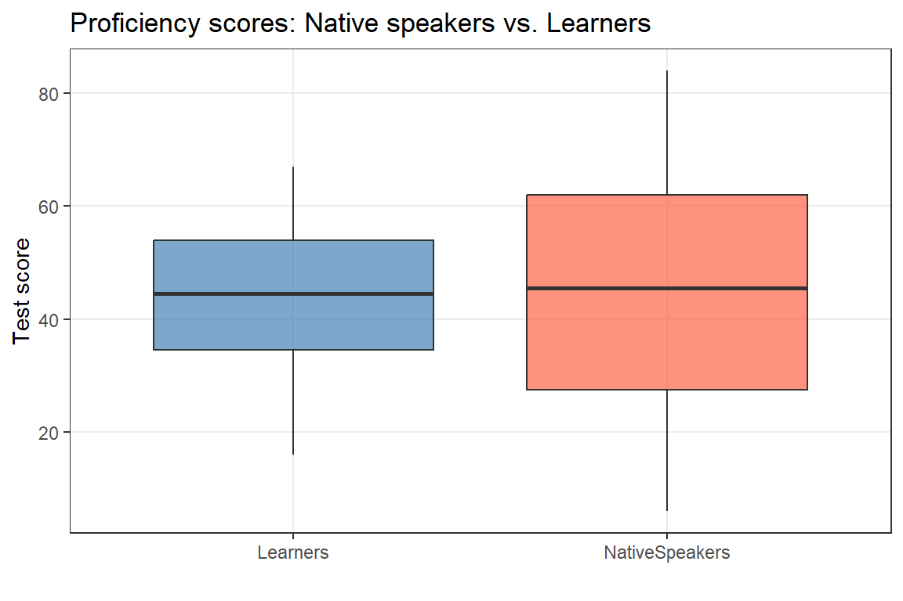
t.test(Score ~ Group, var.equal = TRUE, data = tdata)
Two Sample t-test
data: Score by Group
t = -0.054589, df = 18, p-value = 0.9571
alternative hypothesis: true difference in means between group Learners and group NativeSpeakers is not equal to 0
95 percent confidence interval:
-19.74317 18.74317
sample estimates:
mean in group Learners mean in group NativeSpeakers
43.5 44.0 effectsize::cohens_d(tdata$Score ~ tdata$Group, paired = FALSE)Cohen's d | 95% CI
-------------------------
-0.02 | [-0.90, 0.85]
- Estimated using pooled SD.
NoteReporting: Independent t-test
An independent t-test found no significant difference in proficiency scores between native speakers and learners (t₁₈ = −0.05, p = .957). The effect size was negligible (Cohen’s d = −0.03, 95% CI [−0.95, 0.90]), suggesting the two groups were very similar in test performance.
TipExercises: t-tests
Q1. You measure the same participants under two conditions. Which test is appropriate?
Q2. What does Cohen’s d measure?
12 Chi-Square Tests
NoteSection Overview
What you will learn: How to test associations between categorical variables.
Key tests: Pearson’s χ², Fisher’s Exact Test (brief), with effect sizes (phi, Cramér’s V)
The chi-square test (χ²) tests whether there is an association between two categorical variables.
Pearson’s Chi-Square Test
Pearson’s χ² compares observed cell frequencies to expected frequencies under independence:
\[\chi^2 = \sum_{i} \frac{(O_i - E_i)^2}{E_i}\]
Expected: \(E_i = \frac{\text{Row total} \times \text{Column total}}{\text{Grand total}}\)
Degrees of freedom: \(df = (\text{rows} - 1) \times (\text{columns} - 1)\)
Example: Do speakers of AmE and BrE differ in their use of sort of vs. kind of?
BrE AmE
kindof 181 655
sortof 177 67Visualise with a mosaic plot (shaded by Pearson residuals):
mosaicplot(chidata, shade = TRUE, type = "pearson",
main = "kind of / sort of × BrE / AmE")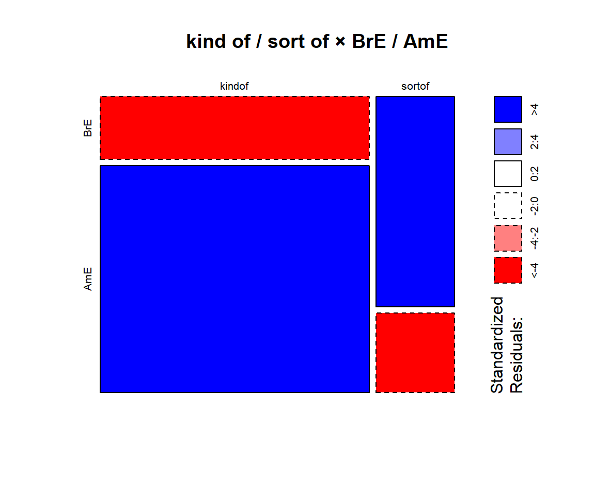
Run the test:
chisq.test(chidata, correct = FALSE)
Pearson's Chi-squared test
data: chidata
X-squared = 220.73, df = 1, p-value < 0.00000000000000022Effect Size: phi (φ) and Cramér’s V
For 2×2 tables: \(\phi = \sqrt{\chi^2 / N}\)
For larger tables: \(V = \sqrt{\chi^2 / [N \cdot (k - 1)]}\) where \(k = \min(\text{rows}, \text{columns})\)
effectsize::phi(chidata, adjust = FALSE)Phi | 95% CI
-------------------
0.45 | [0.40, 1.00]
- One-sided CIs: upper bound fixed at [1.00].
Tipphi / Cramér’s V Benchmarks
| Value | Magnitude | Comparable to Cohen’s d |
|---|---|---|
| < .10 | Negligible | — |
| .10 | Small | 0.2 |
| .30 | Medium | 0.5 |
| .50 | Large | 0.8 |
Source: Cohen (1988).
NoteReporting: Chi-Square Test
A Pearson’s χ² test confirmed a highly significant association of moderate size between variety of English and hedge choice (χ²(1) = 220.73, p < .001, φ = .45). BrE speakers strongly favoured sort of, while AmE speakers showed a preference for kind of.
Assumptions of the Chi-Square Test
WarningChi-Square Assumptions
- At least 80% of expected cell frequencies must be ≥ 5
- No expected cell frequency may be < 1
- Observations must be independent (each participant contributes to only one cell)
When these conditions are not met, use Fisher’s Exact Test instead: fisher.test(chidata).
13 Correlation
NoteSection Overview
What you will learn: How to assess the strength of association between two numeric variables.
Key tests: Pearson’s r (linear), Spearman’s rho (monotonic / ordinal)
Correlation quantifies the strength and direction of a linear or monotonic relationship between two numeric variables. It ranges from -1 (perfect negative) through 0 (no correlation) to +1 (perfect positive).
| Correlation | Strength |
|---|---|
| r | |
| 0.1–0.3 | small |
| 0.3–0.5 | medium |
| > 0.5 | large |
Pearson’s Correlation (Linear)
Pearson’s r measures the strength of a linear relationship between two numeric variables. It assumes both variables are approximately normally distributed.
# Example: relationship between predictors in the regression data
cor.test(slrdata$Date, slrdata$Prepositions, method = "pearson")
Pearson's product-moment correlation
data: slrdata$Date and slrdata$Prepositions
t = 2.3835, df = 535, p-value = 0.0175
alternative hypothesis: true correlation is not equal to 0
95 percent confidence interval:
0.01804708 0.18550790
sample estimates:
cor
0.1025037 Spearman’s Rank Correlation (Monotonic)
Spearman’s ρ (rho) measures the strength of a monotonic relationship. It works on ranks rather than raw values, so it is appropriate for ordinal data or when normality is violated.
cor.test(slrdata$Date, slrdata$Prepositions, method = "spearman")
Spearman's rank correlation rho
data: slrdata$Date and slrdata$Prepositions
S = 24041973, p-value = 0.113
alternative hypothesis: true rho is not equal to 0
sample estimates:
rho
0.06846321
WarningCorrelation Is Not Causation
A strong correlation tells you two variables move together — it does not tell you one causes the other. The pattern may reflect a third (unmeasured) variable, reverse causation, or coincidence. Interpreting correlation causally without a controlled design is one of the most common errors in applied statistics.
Correlation is a natural bridge to regression: both measure the association between variables, but regression goes further by modelling how the outcome depends on predictors, and by allowing multiple predictors simultaneously.
Part B — Regression Concepts
14 What Is Regression?
At its core, regression models the relationship between:
- One or more predictor variables (independent variables, IVs, explanatory variables)
- A single outcome variable (dependent variable, DV, response variable)
The fundamental linear regression equation is:
\[y = \alpha + \beta x + \epsilon\]
where:
- \(y\) is the outcome we want to predict
- \(\alpha\) (alpha) is the intercept — the predicted value of \(y\) when the predictor equals zero
- \(\beta\) (beta) is the coefficient (slope) — how much \(y\) changes for a one-unit increase in \(x\)
- \(x\) is the predictor variable
- \(\epsilon\) (epsilon) is the residual (error) — the difference between observed and predicted \(y\)
A Concrete Example
Suppose we want to predict weight (kg) from height (cm). A regression fit might give:
\[\text{Weight} = -93.77 + 0.98 \times \text{Height}\]
Interpretation:
- A person 0 cm tall is predicted to weigh −93.77 kg (clearly nonsensical — the intercept is just where the line crosses y, not a meaningful prediction when 0 is outside the data range).
- For every additional 1 cm of height, predicted weight increases by 0.98 kg.
- A person 170 cm tall is predicted to weigh \(-93.77 + 0.98 \times 170 \approx 72.83\) kg.
Why Regression?
Regression models are the dominant tool in quantitative humanities research because they:
- Handle multiple predictors simultaneously — test the effect of one predictor while controlling for others.
- Are extremely flexible — can handle numeric, categorical, binary, and ordinal outcomes.
- Produce interpretable output — coefficients, p-values, confidence intervals, effect sizes.
- Are widely reported — facilitates comparison across studies and meta-analysis.
- Form the basis of mixed-effects models (Chapter 8) and most machine-learning methods.
15 The Geometry of OLS
Ordinary Least Squares (OLS) finds the line that minimises the sum of squared vertical distances from each data point to the line. These vertical distances are the residuals.
\[\text{OLS criterion:} \quad \min_{\alpha, \beta} \sum_{i=1}^{n} (y_i - \hat{y}_i)^2\]
where \(\hat{y}_i = \alpha + \beta x_i\) is the predicted value for observation \(i\).
Why squared? Because squaring (a) makes all distances positive and (b) penalises large residuals more than small ones.
Illustration — a scatter plot of ten points with the OLS line and residuals:
set.seed(42)
toy <- data.frame(x = runif(10, 0, 10)) |>
dplyr::mutate(y = 2 + 1.5 * x + rnorm(10, 0, 2))
m_toy <- lm(y ~ x, data = toy)
toy$pred <- predict(m_toy)
ggplot(toy, aes(x, y)) +
geom_segment(aes(xend = x, yend = pred), color = "red", linewidth = 0.7) +
geom_abline(intercept = coef(m_toy)[1], slope = coef(m_toy)[2],
color = "steelblue", linewidth = 1) +
geom_point(size = 2) +
theme_bw() +
labs(title = "OLS: the line that minimises squared residuals",
subtitle = "Red segments are the residuals (observed − predicted)",
x = "x", y = "y")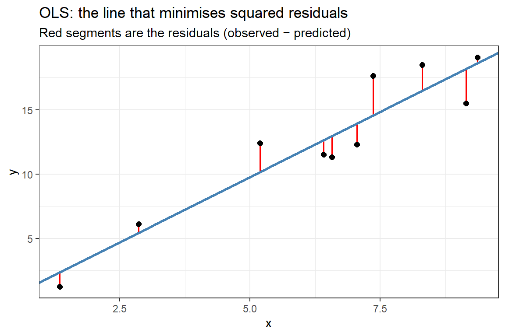
The regression line (blue) is positioned to minimise the total of the squared red segments.
16 Interpreting Regression Output
A regression model produces several key statistics. Here’s what they mean.
Coefficients (β)
The interpretation depends on the type of regression:
| Regression type | Coefficient interpretation |
|---|---|
| Linear | A 1-unit increase in \(x\) is associated with a \(\beta\)-unit change in \(y\) |
| Logistic | A 1-unit increase in \(x\) multiplies the odds of the outcome by \(e^\beta\) |
| Poisson | A 1-unit increase in \(x\) multiplies the expected count by \(e^\beta\) |
Standard Error (SE)
The SE tells us how much the coefficient would vary if we repeated the study many times with different samples from the same population. Smaller SE = more precise estimate.
t-value (linear) or z-value (logistic)
\[t = \frac{\text{Coefficient}}{\text{SE}}\]
The t- or z-value measures how many standard errors the coefficient is away from zero. Larger absolute values → stronger evidence against H₀: β = 0.
p-value
The probability of observing a coefficient this large (or larger) if the true effect were zero. p < .05 is the conventional threshold for “statistical significance.”
Warningp-values ≠ Effect Size
A tiny, practically meaningless effect can be “significant” with a large enough sample. A large, important effect can be “non-significant” with a small sample. Always report effect sizes alongside p-values.
R² (for linear regression)
R² = proportion of variance in the outcome explained by the model.
| R² | Interpretation |
|---|---|
| 0 | Model explains no variance (useless) |
| 0.10 | 10% explained (weak but possibly meaningful in social sciences) |
| 0.50 | 50% explained (strong) |
| 1.00 | Perfect fit (only possible with no measurement error) |
Adjusted R² penalises models for including many predictors. It is always ≤ R² and prevents overfitting:
\[R^2_{\text{adjusted}} = 1 - \frac{(1 - R^2)(n - 1)}{n - k - 1}\]
where k is the number of predictors.
AIC and BIC
AIC (Akaike Information Criterion) and BIC (Bayesian Information Criterion) balance model fit against complexity. Lower is better.
Rules of thumb for comparing models:
- ΔAIC < 2: models are essentially equivalent
- ΔAIC = 2–7: moderate evidence for the model with lower AIC
- ΔAIC > 10: strong evidence for the model with lower AIC
TipExercises: Regression Basics
Q1. What does the intercept (α) in a regression represent?
Q2. A logistic regression reports a coefficient β = 0.693 for a predictor. What is the odds ratio?
17 Regression Assumptions
Linear Regression Assumptions
- Linearity — the relationship between predictors and outcome is linear
- Independence — observations are independent (no autocorrelation, no nesting)
- Normality of residuals — residuals are approximately normally distributed
- Homoscedasticity — residual variance is constant across the range of predicted values
- No perfect multicollinearity — predictors are not perfectly correlated with each other
NoteWhen Assumptions Are Violated
- Non-linearity: add polynomial terms, use a non-linear model, or transform variables
- Non-independence (nested data, repeated measures): use mixed-effects models (Chapter 8)
- Non-normal residuals: often tolerated for large samples; transform the outcome if severe
- Heteroscedasticity: use robust standard errors, or weighted regression
- Multicollinearity: remove or combine correlated predictors; check VIF (see the diagnostics section)
Logistic Regression Assumptions
For logistic regression (binary outcomes), the assumptions differ:
- Independence of observations (same as linear)
- Linearity in the logit — the predictors are linearly related to the log-odds of the outcome
- No perfect separation — no predictor perfectly predicts the outcome
- Adequate sample size — rule of thumb: at least 10 events per predictor
Residual normality and homoscedasticity are not required for logistic regression — the outcome is binary, so these assumptions don’t apply.
18 Categorical Predictors
Regression can include categorical predictors (e.g., gender, genre, condition) alongside numeric ones. R handles the mechanics automatically through dummy coding.
How Dummy Coding Works
For a categorical predictor with \(k\) levels, R creates \(k - 1\) dummy variables. One level is designated the reference (baseline); the other levels are compared to it.
Example: A predictor Register with three levels (Academic, News, Fiction) becomes two dummy variables:
| Observation | Register | RegisterNews | RegisterFiction |
|---|---|---|---|
| 1 | Academic | 0 | 0 |
| 2 | News | 1 | 0 |
| 3 | Fiction | 0 | 1 |
The coefficient for RegisterNews tells you the difference between News and Academic (the reference). The coefficient for RegisterFiction tells you the difference between Fiction and Academic. There is no coefficient for Academic — it is absorbed into the intercept.
Changing the Reference Level
By default R uses alphabetical order for factor levels. To make a specific level the reference, convert the variable to a factor with the desired order:
The first level (Academic here) becomes the reference.
Part C — Regression in R
19 Simple Linear Regression
NoteSection Overview
What you will learn: How to fit, diagnose, and interpret a simple linear regression in R.
Key functions: lm(), summary(), performance::check_model(), effectsize::cohens_f_squared()
Example: Preposition Use Across Time
Research question: does preposition frequency in English change over historical time?
Data: 537 historical English texts (1125–1900) with preposition counts per 1,000 words.
head(slrdata, 10) Date Genre Text Prepositions Region
1 1736 Science albin 166.01 North
2 1711 Education anon 139.86 North
3 1808 PrivateLetter austen 130.78 North
4 1878 Education bain 151.29 North
5 1743 Education barclay 145.72 North
6 1908 Education benson 120.77 North
7 1906 Diary benson 119.17 North
8 1897 Philosophy boethja 132.96 North
9 1785 Philosophy boethri 130.49 North
10 1776 Diary boswell 135.94 NorthCentre the Predictor
Centring Date (subtracting the mean) makes the intercept interpretable — it represents the frequency at the mean year rather than at year 0.
Visualise the Relationship
ggplot(slrdata, aes(Date, Prepositions)) +
geom_point(alpha = 0.4, color = "steelblue") +
geom_smooth(method = "lm", se = TRUE, color = "red", fill = "pink", alpha = 0.3) +
theme_bw() +
theme(panel.grid.minor = element_blank()) +
labs(title = "Preposition frequency over time",
x = "Year (centred)", y = "Prepositions per 1,000 words")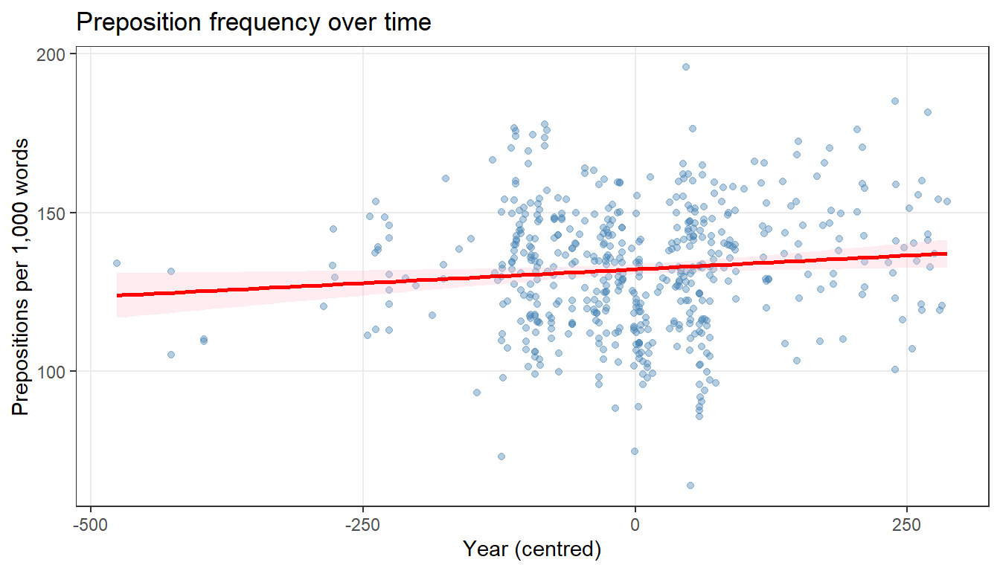
Fit the Model
Call:
lm(formula = Prepositions ~ Date, data = slrdata)
Residuals:
Min 1Q Median 3Q Max
-69.101 -13.855 0.578 13.321 62.858
Coefficients:
Estimate Std. Error t value Pr(>|t|)
(Intercept) 132.190093 0.838637 157.625 <0.0000000000000002 ***
Date 0.017322 0.007267 2.383 0.0175 *
---
Signif. codes: 0 '***' 0.001 '**' 0.01 '*' 0.05 '.' 0.1 ' ' 1
Residual standard error: 19.43 on 535 degrees of freedom
Multiple R-squared: 0.01051, Adjusted R-squared: 0.008657
F-statistic: 5.681 on 1 and 535 DF, p-value: 0.0175Key results (from the summary):
- Intercept ≈ 131.94: predicted frequency at the mean year
- Date coefficient ≈ 0.0173: for each additional year, frequency increases by about 0.017 prepositions per 1,000 words
- p-value ≈ 0.0175: statistically significant at α = .05
- R² ≈ 0.0105: only 1% of variance explained — a very weak effect
The result shows the classic warning sign: statistically significant does not mean practically important. With 537 observations, even tiny effects reach significance.
Model Diagnostics
Use performance::check_model() for a comprehensive diagnostic plot:
performance::check_model(m1_slr)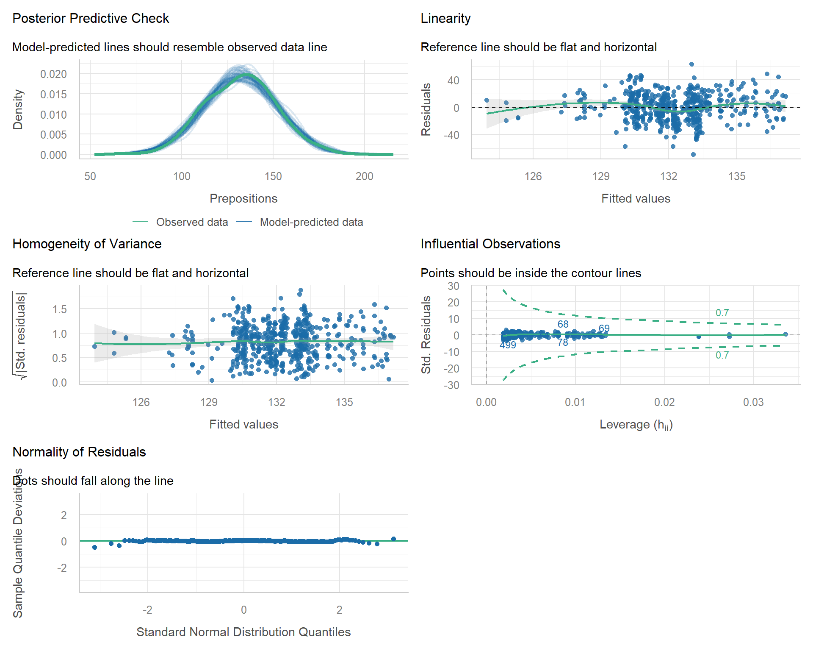
How to read each panel:
- Posterior Predictive Check: observed and model-simulated distributions should overlap
- Linearity: residuals vs fitted should scatter randomly around horizontal line
- Homogeneity of Variance: should show a flat band, no funnel
- Influential Observations: no points should exceed Cook’s distance threshold
- Normality of Residuals: Q-Q plot points should follow the diagonal
- Collinearity: not applicable (only one predictor)
Effect Size
Cohen’s f² quantifies the effect size for regression. Benchmarks: 0.02 small, 0.15 medium, 0.35 large.
effectsize::cohens_f_squared(m1_slr)# Effect Size for ANOVA
Parameter | Cohen's f2 | 95% CI
------------------------------------
Date | 0.01 | [0.00, Inf]
- One-sided CIs: upper bound fixed at [Inf].A very small f² confirms the negligible effect size we already inferred from R².
20 Multiple Linear Regression
Multiple linear regression extends simple regression to multiple predictors:
\[y = \alpha + \beta_1 x_1 + \beta_2 x_2 + \dots + \beta_k x_k + \epsilon\]
Example: Gift Spending and Attractiveness
Research question: do men spend more on presents for women they find attractive and/or when they are single?
Data: 100 men rated women’s attractiveness, reported relationship status, and amount spent on a gift.
head(mlrdata, 10) status attraction money
1 Relationship NotInterested 86.33
2 Relationship NotInterested 45.58
3 Relationship NotInterested 68.43
4 Relationship NotInterested 52.93
5 Relationship NotInterested 61.86
6 Relationship NotInterested 48.47
7 Relationship NotInterested 32.79
8 Relationship NotInterested 35.91
9 Relationship NotInterested 30.98
10 Relationship NotInterested 44.82Visualise the Data
ggplot(mlrdata, aes(x = status, y = money, fill = attraction)) +
geom_boxplot(alpha = 0.7) +
scale_fill_manual(values = c("gray60", "steelblue")) +
theme_bw() +
theme(legend.position = "top", panel.grid.minor = element_blank()) +
labs(title = "Money spent on gifts by relationship status and attraction",
x = "Relationship Status", y = "Money Spent ($)", fill = "Attraction")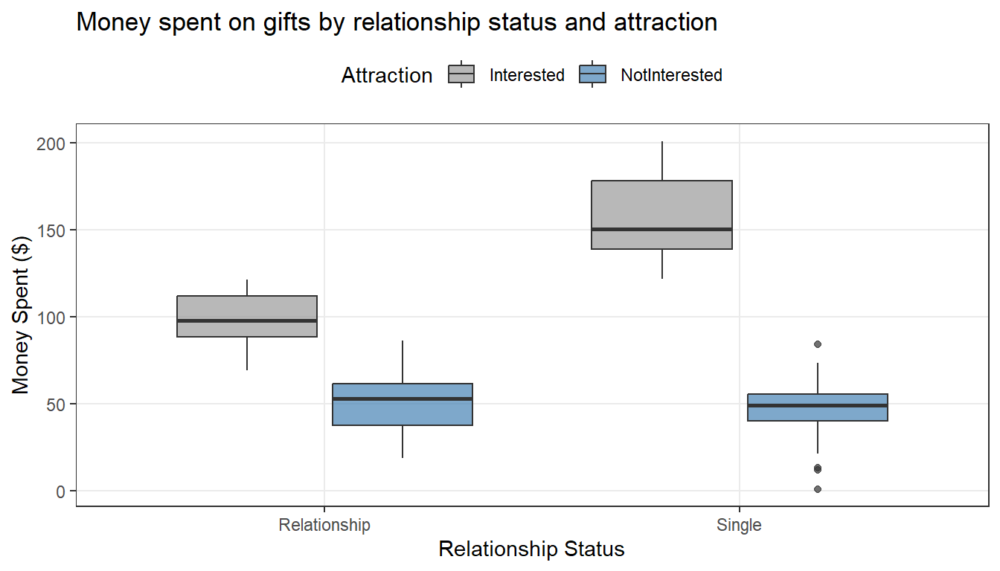
The plot suggests three effects:
- Single men spend more than those in relationships
- Men spend more when attracted to the woman
- The effect of being single may be stronger when the man is attracted (an interaction)
Fit a Model with Interaction
We start with a model including both main effects and their interaction. The * operator means “both main effects plus interaction”:
Call:
lm(formula = money ~ status * attraction, data = mlrdata)
Residuals:
Min 1Q Median 3Q Max
-45.08 -14.26 0.46 11.93 44.14
Coefficients:
Estimate Std. Error t value
(Intercept) 99.155 3.795 26.131
statusSingle 57.693 5.366 10.751
attractionNotInterested -47.663 5.366 -8.882
statusSingle:attractionNotInterested -63.179 7.589 -8.325
Pr(>|t|)
(Intercept) < 0.0000000000000002 ***
statusSingle < 0.0000000000000002 ***
attractionNotInterested 0.0000000000000375 ***
statusSingle:attractionNotInterested 0.0000000000005809 ***
---
Signif. codes: 0 '***' 0.001 '**' 0.01 '*' 0.05 '.' 0.1 ' ' 1
Residual standard error: 18.97 on 96 degrees of freedom
Multiple R-squared: 0.852, Adjusted R-squared: 0.8474
F-statistic: 184.3 on 3 and 96 DF, p-value: < 0.00000000000000022Interpretation:
- Intercept ≈ 50: money spent when in a relationship AND not interested (both reference levels)
- statusSingle ≈ 30: being single adds about $30 to spending (when not interested)
- attractionInterested ≈ 25: being interested adds about $25 (when in a relationship)
- Interaction ≈ 20: the effect of being single is $20 larger when the man is also interested
A significant interaction indicates a non-additive effect: the combined effect of two predictors is more (or less) than the sum of their individual effects.
Model Diagnostics
performance::check_model(m_full)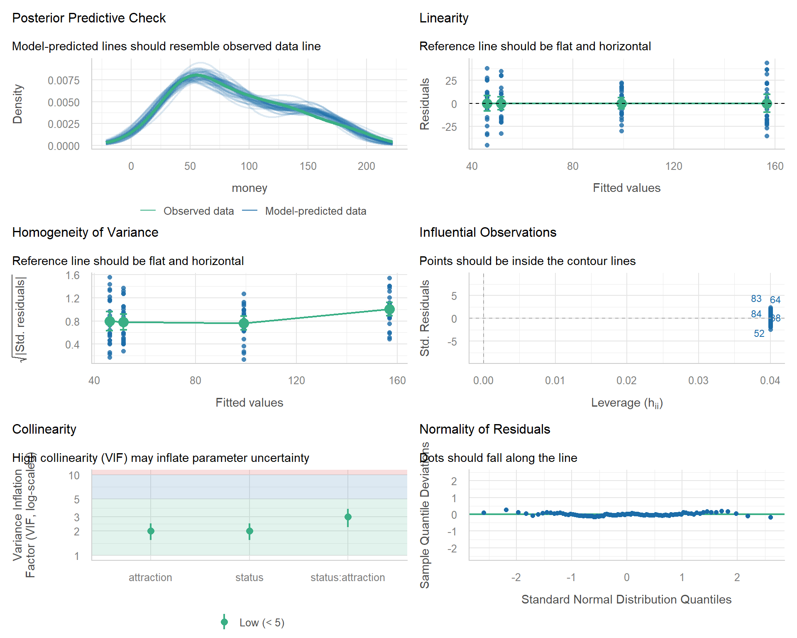
Checking Multicollinearity: VIF
Variance Inflation Factor (VIF) quantifies how much the standard error of a coefficient is inflated by correlations with other predictors.
Rules of thumb:
| VIF | Concern |
|---|---|
| < 5 | No concern |
| 5–10 | Moderate concern |
| > 10 | Serious multicollinearity |
status attraction
1 1 Low VIFs indicate predictors are not meaningfully correlated — the model’s coefficients can be trusted.
Compare Models
Does adding the interaction improve the model over just the main effects?
anova(m_additive, m_full)Analysis of Variance Table
Model 1: money ~ status + attraction
Model 2: money ~ status * attraction
Res.Df RSS Df Sum of Sq F Pr(>F)
1 97 59505
2 96 34558 1 24947 69.303 0.0000000000005809 ***
---
Signif. codes: 0 '***' 0.001 '**' 0.01 '*' 0.05 '.' 0.1 ' ' 1Also compare on AIC:
AIC(m_additive, m_full) df AIC
m_additive 4 930.6519
m_full 5 878.3089Lower AIC and significant F test both support the model with interaction.
TipExercises: Multiple Linear Regression
Q1. In the gift-spending model, what does a significant interaction between status and attraction mean?
21 Binary Logistic Regression
NoteSection Overview
What you will learn: How to fit and interpret a logistic regression for a binary outcome.
Key functions: glm(family = binomial), exp(coef()), performance::check_model()
Logistic regression models a binary outcome (two categories: 0/1, yes/no) using the logistic function:
\[\log\left(\frac{p}{1-p}\right) = \alpha + \beta_1 x_1 + \beta_2 x_2 + \dots\]
where \(p\) is the probability of the outcome = 1. The left side is the log-odds (also called the logit).
Example: Discourse Particle eh in New Zealand English
Research question: do age, gender, and ethnicity predict whether New Zealand English speakers use the discourse particle eh?
Data: 25,821 speech units from the ICE New Zealand corpus, coded for speaker demographics and presence/absence of eh.
head(logdata, 10) ID Gender Age Ethnicity EH
1 <S1A-001#M> Men Young Pakeha 0
2 <S1A-001#M> Men Young Pakeha 1
3 <S1A-001#M> Men Young Pakeha 0
4 <S1A-001#M> Men Young Pakeha 0
5 <S1A-001#M> Men Young Pakeha 1
6 <S1A-001#M> Men Young Pakeha 1
7 <S1A-001#M> Men Young Pakeha 0
8 <S1A-001#M> Men Young Pakeha 0
9 <S1A-001#M> Men Young Pakeha 0
10 <S1A-001#M> Men Young Pakeha 1Check Event Frequency
For logistic regression, check that the outcome is not vanishingly rare:
eh occurs in about 5% of speech units — rare but sufficient for analysis.
Visualise the Outcome
plot_data <- logdata |>
dplyr::group_by(Age, Gender) |>
dplyr::summarise(
prop_EH = mean(as.numeric(as.character(EH))),
se = sqrt(prop_EH * (1 - prop_EH) / dplyr::n()),
.groups = "drop"
)
ggplot(plot_data, aes(x = Age, y = prop_EH, fill = Gender)) +
geom_col(position = position_dodge(width = 0.9), alpha = 0.8) +
geom_errorbar(aes(ymin = prop_EH - se, ymax = prop_EH + se),
position = position_dodge(width = 0.9), width = 0.2) +
scale_fill_manual(values = c("steelblue", "tomato")) +
theme_bw() +
theme(legend.position = "top", panel.grid.minor = element_blank()) +
labs(title = "Proportion of utterances containing 'eh' by age and gender",
x = "", y = "Proportion with 'eh'", fill = "")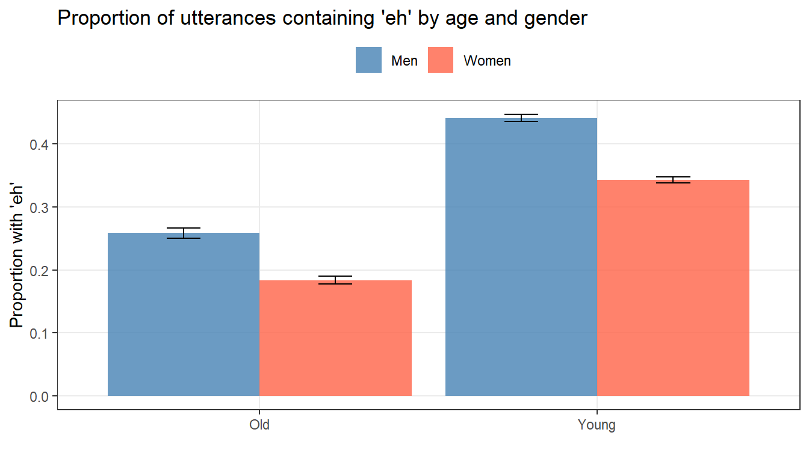
Fit the Model
Fit a logistic regression with all three predictors:
Call:
glm(formula = EH ~ Age + Gender + Ethnicity, family = binomial,
data = logdata)
Coefficients:
Estimate Std. Error z value Pr(>|z|)
(Intercept) -1.05340 0.03795 -27.757 <0.0000000000000002 ***
AgeYoung 0.83497 0.03463 24.113 <0.0000000000000002 ***
GenderWomen -0.41908 0.02733 -15.336 <0.0000000000000002 ***
EthnicityPakeha -0.01735 0.03394 -0.511 0.609
---
Signif. codes: 0 '***' 0.001 '**' 0.01 '*' 0.05 '.' 0.1 ' ' 1
(Dispersion parameter for binomial family taken to be 1)
Null deviance: 33008 on 25820 degrees of freedom
Residual deviance: 32139 on 25817 degrees of freedom
AIC: 32147
Number of Fisher Scoring iterations: 4Interpret Coefficients: Odds Ratios
Logistic regression coefficients are on the log-odds scale — hard to interpret directly. Exponentiate them to get odds ratios (OR):
# Odds ratios with 95% confidence intervals
exp(cbind(OR = coef(m_log), confint.default(m_log))) OR 2.5 % 97.5 %
(Intercept) 0.3487501 0.3237508 0.3756798
AgeYoung 2.3047375 2.1535071 2.4665881
GenderWomen 0.6576522 0.6233557 0.6938357
EthnicityPakeha 0.9828030 0.9195524 1.0504042Interpretation:
- OR > 1 → the predictor increases the odds of eh
- OR < 1 → the predictor decreases the odds
- OR = 1 → no effect
For a predictor with OR = 1.5, each one-unit increase (or shift from reference to this level) multiplies the odds of the outcome by 1.5 — equivalently, a 50% increase in odds.
Compare to Baseline
Likelihood ratio test comparing the fitted model to an intercept-only baseline:
Analysis of Deviance Table
Model 1: EH ~ 1
Model 2: EH ~ Age + Gender + Ethnicity
Resid. Df Resid. Dev Df Deviance Pr(>Chi)
1 25820 33008
2 25817 32139 3 868.47 < 0.00000000000000022 ***
---
Signif. codes: 0 '***' 0.001 '**' 0.01 '*' 0.05 '.' 0.1 ' ' 1Diagnostics
performance::check_model(m_log)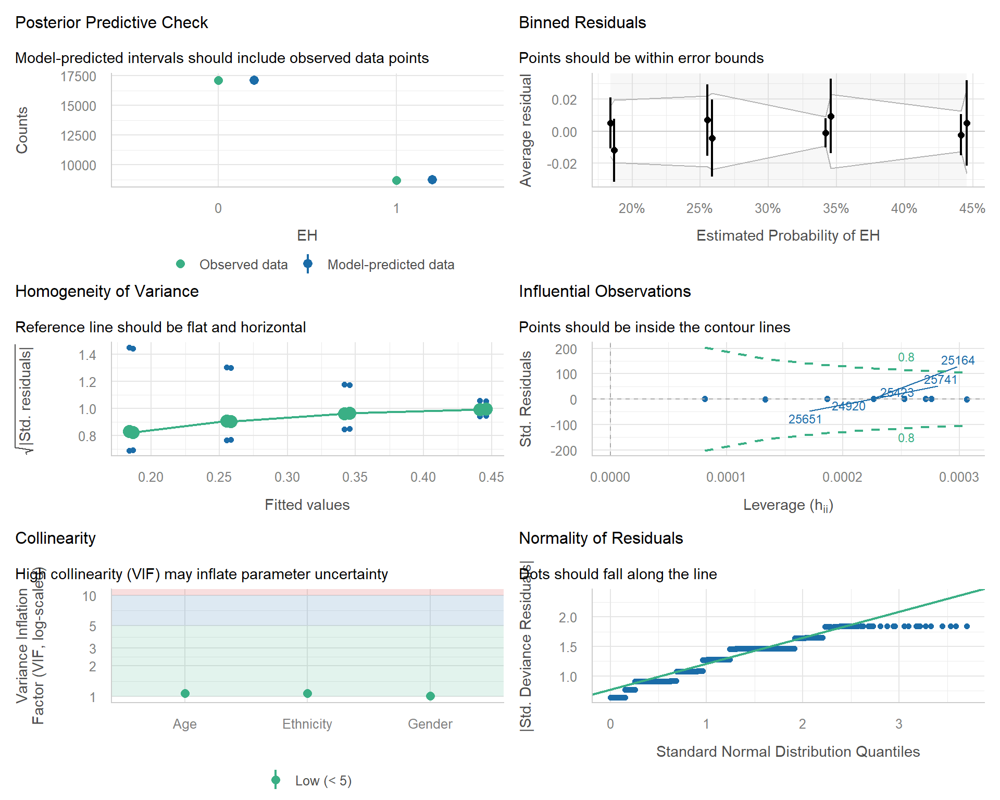
For logistic regression, pay particular attention to:
- Binned residuals — should scatter randomly around zero
- Influential observations — Cook’s distance
- Collinearity — VIF for predictors
Normality and homoscedasticity do not apply.
TipExercises: Logistic Regression
Q1. A logistic regression returns a coefficient β = -1.0 for a predictor. What is the odds ratio and what does it mean?
22 Reporting Regression Results
Good regression reports include, at minimum:
- The research question and the operational outcome and predictor variables
- Descriptive statistics of all variables (mean/SD for numeric, counts/proportions for categorical)
- The model specification (formula, type: linear, logistic, etc.)
- Coefficient table with estimates, SEs, test statistics, p-values, and 95% confidence intervals
- Model fit statistics (R² or pseudo-R² for logistic; AIC)
- Diagnostic plots confirming assumptions are met (at least mentioned in text, included as supplement)
- Effect sizes (Cohen’s f² for linear; odds ratios for logistic)
- Interpretation in substantive terms — translate statistics back into the research question
NoteExample: Reporting a Linear Regression
A simple linear regression examined the relationship between year and preposition frequency across 537 historical English texts. Year was a significant predictor of preposition frequency (β = 0.017, SE = 0.007, t₅₃₅ = 2.38, p = .018), with frequency increasing modestly over time. However, the model explained only 1% of variance (R² = 0.01, adjusted R² = 0.01), and Cohen’s f² (0.011) was below the “small” threshold, indicating that while the trend is statistically detectable in a large sample, its practical magnitude is negligible.
NoteExample: Reporting a Logistic Regression
A binary logistic regression examined whether age, gender, and ethnicity predict the use of discourse particle eh in 25,821 utterances from the ICE New Zealand corpus. Young speakers were significantly more likely to use eh than older speakers (OR = X.XX, 95% CI [X.XX, X.XX], p < .001). Males were also more likely than females (OR = X.XX, 95% CI [X.XX, X.XX], p < .001). Ethnicity did not significantly predict eh use (p = .XX). The overall model significantly improved fit over an intercept-only baseline (χ²(3) = XX.X, p < .001).
Automated reporting with the report package provides a solid first draft:
report::report(m_log)Always revise the automated draft to match your journal’s style and your audience.
23 Further Resources
This chapter covered the core workflow for inferential tests and fixed-effects regression. Topics not covered here but worth pursuing:
-
Non-parametric alternatives — when parametric assumptions fail, use Mann-Whitney U (independent two-group), Wilcoxon signed-rank (paired two-group), Kruskal-Wallis (multiple independent groups), or Friedman (multiple paired groups). All have simple R implementations:
wilcox.test(),kruskal.test(),friedman.test(). -
ANOVA — for comparing means across more than two groups, use
aov()oranova(lm(...)). - Mixed-effects models — essential when observations are nested (students within schools) or repeated (multiple trials per participant). Covered in Chapter 8.
-
Multinomial and ordinal regression — for categorical outcomes with more than two levels. Packages:
nnet::multinom(),MASS::polr(). -
Poisson and negative binomial regression — for count outcomes.
glm(family = poisson)andMASS::glm.nb(). -
Power analysis — for planning adequately-powered studies. The
pwrpackage covers t-tests, correlations, and simple regressions.
Recommended references:
- Winter (2019), Statistics for Linguists — thorough, accessible, R-based
- Gries (2021), Statistics for Linguistics with R — more technical, excellent for corpus linguistics
- Field, Miles, and Field (2012), Discovering Statistics Using R — comprehensive general-purpose reference
NoteAttribution
This chapter is adapted and merged from three LADAL tutorials by Martin Schweinberger:
- Basic Inferential Statistics using R
- Regression Analysis: Conceptual Foundations
- Regression Analysis: Implementation in R
Original source material is released under the GNU General Public License, Version 3.